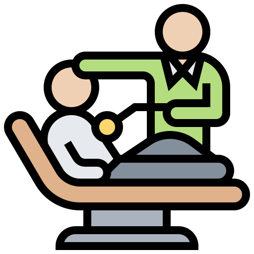

Chequeo Médico
Los Chequeos Generales están orientados a evaluar tu estado de salud y prevenir algunas patologías asociadas a tu tipo de trabajo, sexo, edad, estilo de vida e historia clínica personal y familiar.
Pedir Turno

Chequeo Cardiológico Completo
El Chequeo Cardiológico permite profundizar en el sistema circulatorio, corazón y vasos sanguíneos, con el fin de evaluar su funcionamiento y prevenir la aparición de enfermedades.
Pedir Turno
Electrocardiogramas
Un electrocardiograma (ECG) es un procedimiento simple e indoloro que mide la actividad eléctrica del corazón.
Pedir Turno

Tomografía Computarizada
Las tomografías computadas multislice proporcionan imágenes de alta resolución.
Pedir Turno

Ecografía
La ecografía o ultrasonido es un método de diagnóstico no invasivo, que permite realizar controles evolutivos.
Pedir Turno

Analisis de Laboratorio
Realizamos analisis de muestras de sangre, orina u otra sustancia del cuerpo. Las pruebas de laboratorio ayudan a determinar un diagnóstico, planificar y controlar si el tratamiento es eficaz, o vigilar la enfermedad a lo largo del tiempo.
Pedir Turno
Resonancia Magnética
La resonancia magnética es un método de diagnóstico que funciona con un gran campo magnético (imán) y con ondas de radiofrecuencia para obtener las imágenes.
Pedir Turno
Medicina Nuclear
Los estudios de Medicina Nuclear son procedimientos de diagnóstico por imágenes en los que se utilizan sustancias radioactivas específicas para el órgano que se desea estudiar.
Pedir Turno
Densitometría
La densitometría ósea permite evaluar la masa ósea en pacientes en quienes se sospecha osteoporosis.
Pedir Turno